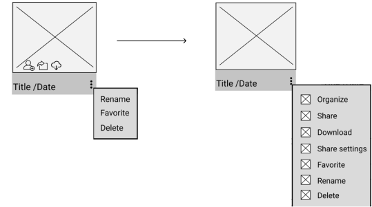
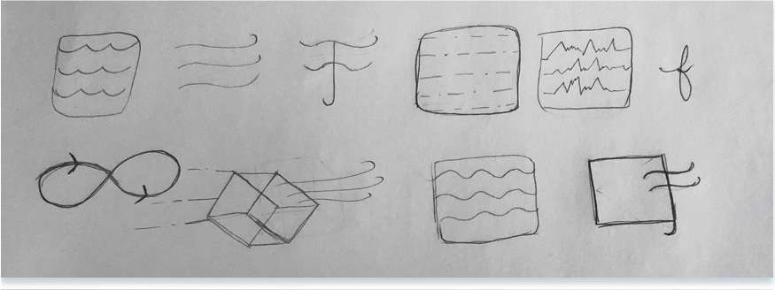
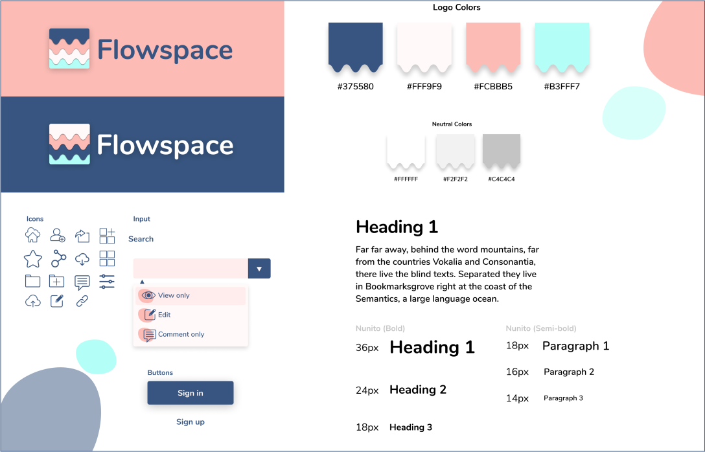

summary
With a plethora of cloud storage platforms being all viable options for users, Flowspace means to enter the space to create a more transparent cloud storage platform where users have full control over the security of their files while maintaining the simplicity they crave. I researched, branded, designed and prototyped Flowspace for my Bloc Designer Track project.
Role
- UX & UI
- Research & Analysis
- Branding & Identity
- Visual Design
- Prototype
- User Testing
Deliverables
- User Surveys
- Competitive Analysis
- User Personas
- User Stories & Flows
- Style Guide
- Sketches
- Low Fidelity Wireframes
- High Fidelity Mockups
- Clickable Prototype
Tools
- Figma
- Whimsical
- Sketch
- Usability Hub
Problem
Most cloud storage platforms are not as focused on privacy and security as they should be. The majority are more focused on being a place that you can house your files, sharing those files and collaborating on documents. Some have options for security, but these can only be unlocked with further payments which include features the user may not even need, but are forced to pay for in order to feel secure.
Solution
With an emphasis on transparency and control for users, Flowspace allows users to not only do the basics of what is needed in a cloud storage app, such as uploading and saving files, sharing, collaborating, and creating documents, but also offers full control and transparency over the files they have shared on an indiviudal level. All of these features are included in the free version, so users will only need to purchase a plan in order to have more storage space, but with a generous 10GB of free storage offered from the beginning, users will be enticed to join.
discovery & research

competitive analysis
I chose 3 popular cloud storage apps to perform a competitive analysis: Google Drive, DropBox, and Box to see where a new cloud storage application could enter the market and thrive.
- info list
- info list
- info list
- info list
- info list
- info list
- info list
- info list
- info list
user research
After scoping out the competition, I conducted a user survey to find out the common habits and pain points of cloud storage users.
80%
said creating content like notes, documents and spreadsheets was an important part of their activity
86.7%
said they used Google Drive as their cloud storage app of choice
53.3%
said they organize their items into folders, categories, or groups
73.3%
said free storage was very important to them
100%
of users who did not use a cloud storage app said they would if there was more privacy / security
80%
said simplicity is very important to them
user personas
Ronald C.

Frustrations
Security feature.
Goals
Collaboration
Create and share files
Kaela S.

Frustrations
Security
Goals
Collaboration
Create and share files
information architecture
user stories
Based on the survey and the personas I made focusing heavily on collaboration, simplicity, free storage and security, I put myself in a potential users mindset and created user stories based on what they wanted to achieve.
I chose to prioritize the basics of a cloud storage application that users said they used the most in the survey and then add in further collaboration and security measures in order to entice both users who use cloud storage already and those who do not yet, but would if security was taken into better consideration.
user flows
I created user flows based user stories I created in order to provide the best experience for my users.
- Security: The ability to view the files you have shared and edit those share permissions at an individual user level.
- Collaboration: The ability to comment on files and tag people for visibility
- Storage: 10GB of free storage just for signing up.
- Expense: All features are available in the free version. Users don’t have to pay more for features, only if they need more storage.
sketches & wireframes
When creating the wireframes for this project, I wanted to create something to make sure that it was familiar enough that it would be easily acclimated to based on users use of other cloud storage apps used by most of my users (Google Drive, Dropbox).
usability test #1
After completing three rounds of testing for the tasks at hand, I was able to identify where the users where having the most confusion.
I did 3 seperate usability tests to test my users completing 3 tasks:
- Sign up for a new account
- Upload or save a file to the cloud
- Organize a file
There was consistent confusion when it came to the hover buttons for share, download, and move file. Users were unable to find them and wanted to go to the vertical dots that many people know as an indicator for ‘options’. In my next iteration, I chose to place those options under the vertical dots and remove the hover buttons all together.
visual design
branding
The Flowspace Story
Entering flow is when the mental state of operation in which a person performing an activity is fully immersed in a feeling of energized focus, full involvement, and enjoyment in the process of the activity.
The idea is to melt this concept into a cloud storage service where all of your important files are in one place and are easily organizable to make sure you have everything you need to collaborate, share, and create in either a personal or professional manner.
Logo Sketches & Concepts
I drew up some images that made me think of the word ‘flow’, and eventually came up with this sort of melting down an icon concept.
Once this was drawn out and the feeling that I wanted Flowspace to evoke was chosen, I got to work choosing a color palette that I thought would help express those emotions further.
I had originally wanted to use a very minimalistic look when it came to the logo, starting with this black and white version, but seeing it in digital form, I decided it needed a bit more.
Style Guide
I chose to use the darker blue as a brand color because it symbolizes intelligence and trust while the lighter coral and aqua give an inviting, friendly vibe. The coral color is a pop of color that is fun and energetic, like entering a “flow state” can be. I believe the fonts are soft and playful which add to this effect. I chose to use the same fonts together instead of the previous ‘basic’ font as the brand font because once I tried it out, they seemed to mesh well together and look different enough when changing weight and size, although they are technically the same.
Flowspace Homepage

Flowspace Dashboard

User Testing
usability test #2
I did 3 separate usability tests to test my users completing 5 tasks:
- Sign up for a new account
- Upload or save a file to the cloud
- Organize a file
- Share a file with a permission of ‘view only’
- Change a user’s permissions on a file that you have shared previously to ‘edit only’, then delete them
Analyzing the feedback from my users, I had a few consistencies reported that I decided to implement and tweak in the final product. One of the most important, was creating a tour to give users a warm welcome into Flowspace.
Conclusion
Breaking down the problem
The process of creating Flowspace taught me a lot about not only the design process, but also myself as a designer. This project was difficult as it does seem that cloud storage apps are ingrained in many users lives already. I struggled to try and differentiate Flowspace from the pack of most used cloud storage apps out there while still maintaining some similarities so as not to confuse users from a process they are comfortable using. Through the competitive analysis, the main weakness I noticed was that many of the security functions that are offered by other apps are only available in paid versions. Flowspace has something on the competition by offering all of the features in the free version and only up-charging for more storage space.
Stepping out of my comfort zone
In the beginning stages of the project, what surprised me the most was having a vision for the project that changed drastically when the branding began. I originally wanted Flowspace to be very minimal in aesthetic, and what came out of the style guide and logo was a far more bubbly and whimsical vibe, which I think works really well with the name, the final logo, and the color pallette. By having an idea before I had even branded the project, I placed myself into a box which I found slowed down the design process quite a bit.
Creating Flowspace was an extremely important learning experience as I now have a full view of a project from start to finish and can see how I would save more time and was able to really expand on who I thought I was as a designer before in terms of style.